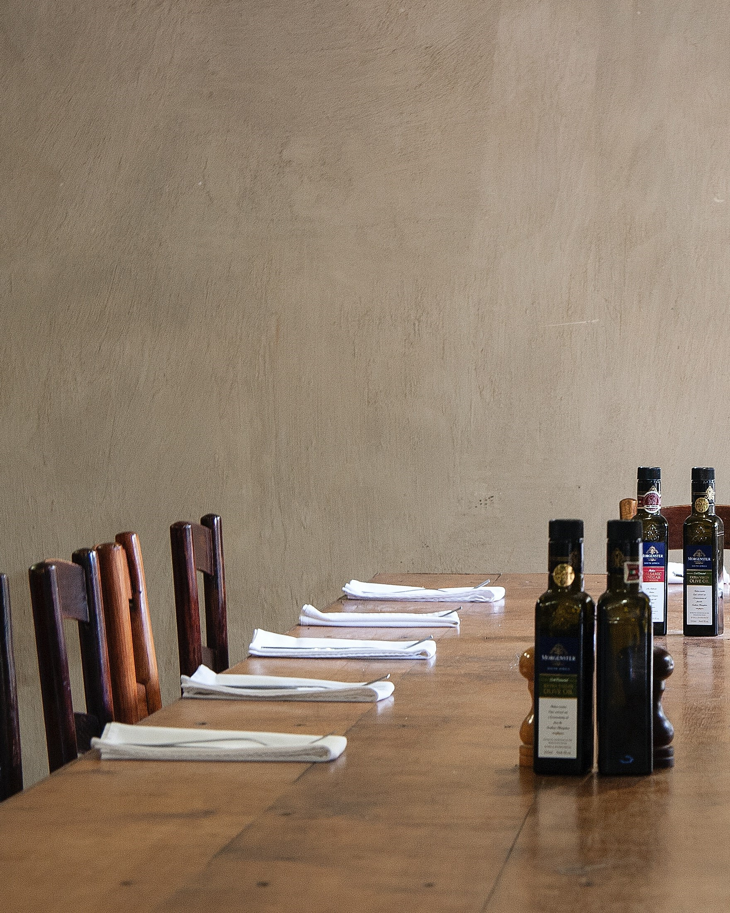
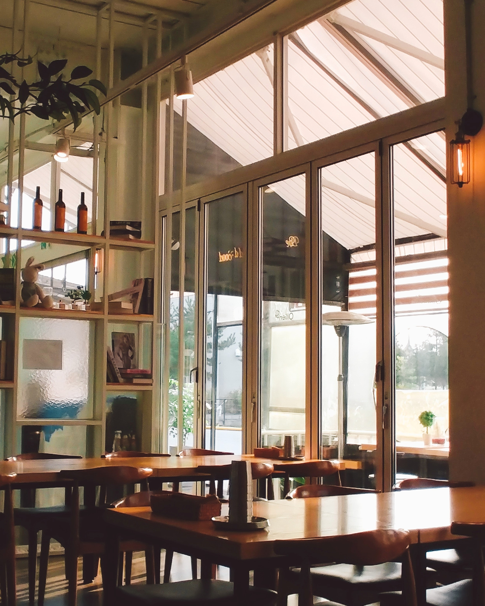
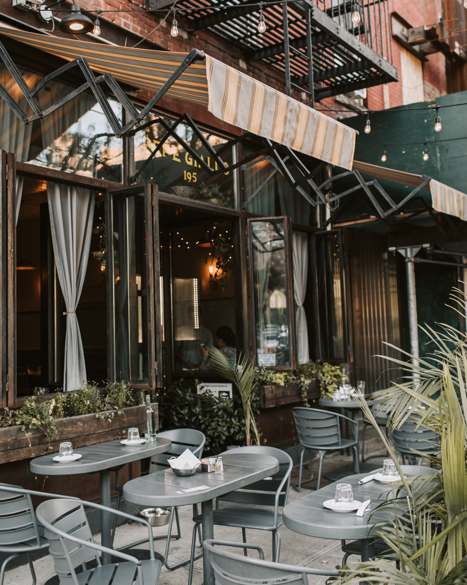
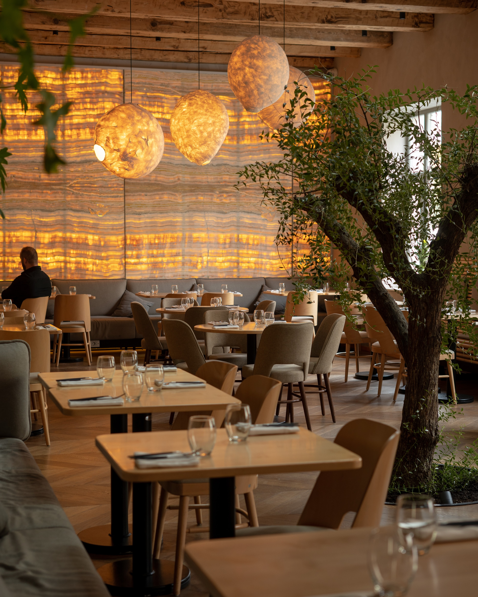
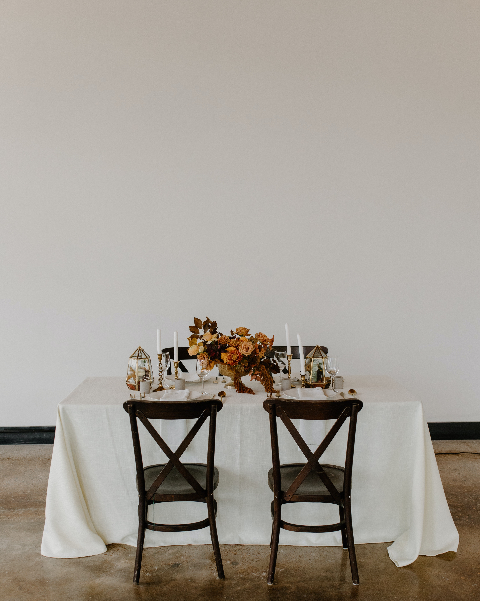
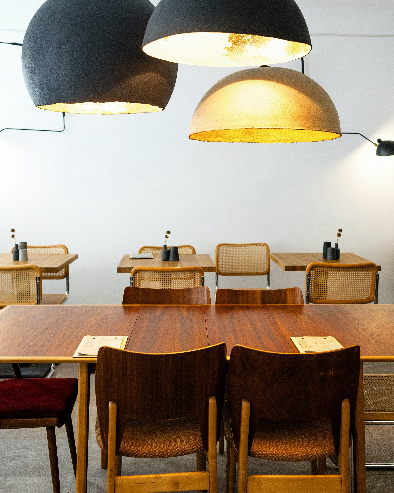
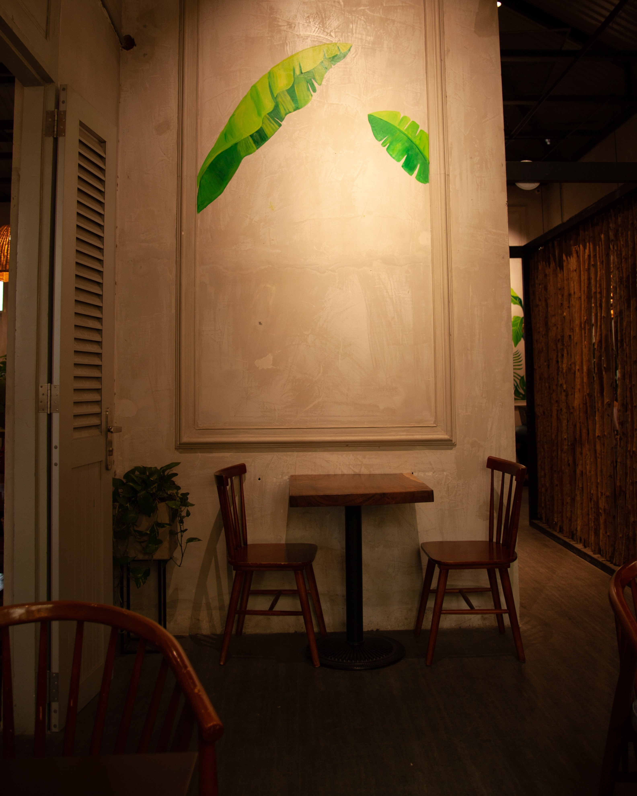

- Let us articulate your vision for your brand -
Every interior has its own unique essence and we want to evoke that through our diverse style of phtography. We believe in giving
all of our a clients a high quality and unique expeirence of their own with
digital souveniers to remember.

Dry Bar MCR

The Meeting Place

The Test Kitchen

Polo Bar and Cafe

Heriloom Cafe

Grey Caffino

The Dusk Inn

Rainforest Cafe

Grove Cafe

Standard Time

Table Talk

The Art of Coffee Cafe

The Cozy Club

Primo Bar and Kitchen

Corner Bar

The Whisky Den

That Minimal Place

Open Space Cafe

The Corner House

Greens Cafe